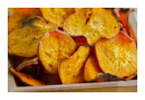
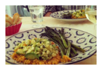
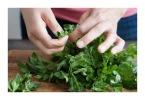
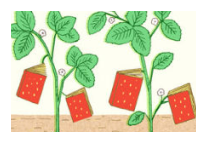

Sign up for out newsletter to receive a handpicked selection of the best stories, recipes, and news, delivered weekly to your inbox.

2012’s Best Summer CookbooksWith the best of the season coming from “orchards, farms and gardens,” NPR has put together an impressive collection of 10 summer cookbooks.
May 23, 2012 / Read...

How to Make Vegetable ChipsAbout a month ago, I ate almost an entire box of kale chips. My brother and I were visiting our cousin in Brooklyn, and before a very thoughtfully prepared vagan...
May 17, 2012 / Read...

Join us on Pinterest!If I could curate a cookbook for you, this would be it.
May 23, 2012 / Read...

Recipes from a Sunday SupperI could not figure out what to do with the delectable slices of Pear Cake that I brought home from this wonderful Sunday supper - eat them slowly, a little bit at...
May 17, 2012 / Read...